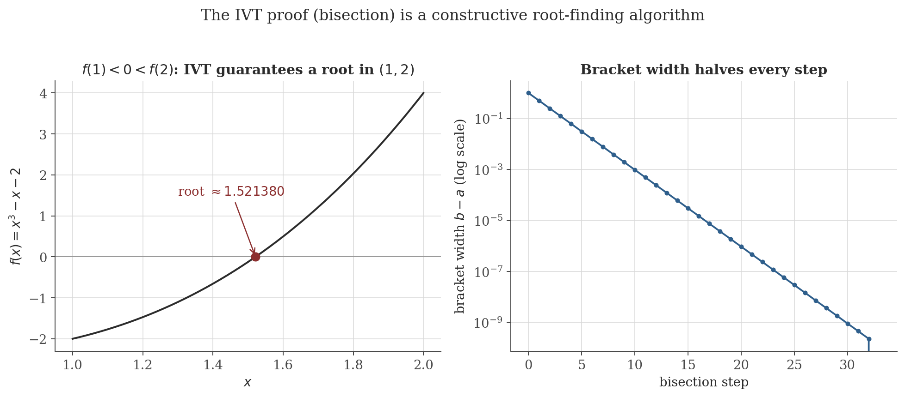
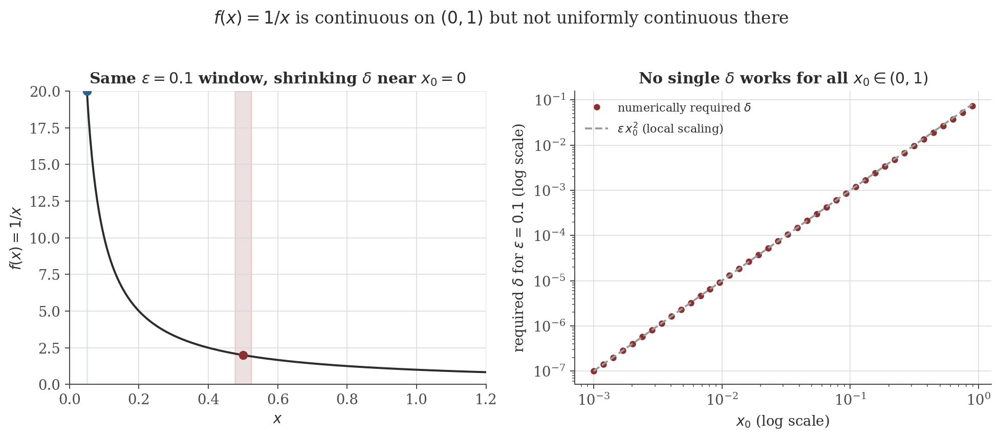

Continuity and Limits
Disclaimer: These are my personal notes compiled for my own reference and learning. They may contain errors, incomplete information, or personal interpretations. While I strive for accuracy, these notes are not peer-reviewed and should not be considered authoritative sources. Please consult official textbooks, research papers, or other reliable sources for academic or professional purposes.
Contents
- Limits of functions
- Continuity, and its sequential characterization
- Algebra and composition of continuous functions
- Types of discontinuity
- The Intermediate Value Theorem
- The Extreme Value Theorem
- Uniform continuity
- L'Hôpital's rule: scope and hypotheses
- Computation
- Common pitfalls
- Connections
- References
1. Limits of functions
$\lim_{x\to a}f(x)=L$ if $\forall\epsilon>0\ \exists\delta>0$ such that $0<|x-a|<\delta \Rightarrow |f(x)-L|<\epsilon$.
The condition $0<|x-a|$ deliberately excludes $x=a$: the limit describes the behavior of $f$ near $a$, independent of (and possibly disagreeing with) whatever value $f$ happens to take, or fail to take, exactly at $a$ — the entire content of Section 4 below.
2. Continuity, and its sequential characterization
$f$ is continuous at $a$ if $\lim_{x\to a}f(x)=f(a)$ — equivalently, $\forall\epsilon>0\ \exists\delta>0$ such that $|x-a|<\delta\Rightarrow|f(x)-f(a)|<\epsilon$ (no exclusion of $x=a$ needed here, since $|f(a)-f(a)|=0<\epsilon$ trivially).
$f$ is continuous at $a$ iff for every sequence $x_n\to a$, $f(x_n)\to f(a)$.
This equivalence is genuinely useful in both directions: it lets discontinuity be proved by exhibiting a single badly-behaved sequence (often easier than negating an $\epsilon$-$\delta$ statement directly — used in Section 4), and it is exactly what transports every sequence fact from the sequences and series note into the proofs of the Extreme Value Theorem in Section 6.
3. Algebra and composition of continuous functions
If $f,g$ are continuous at $a$, so are $f+g$, $f-g$, $fg$, and $f/g$ (where $g(a)\neq0$); if $g$ is continuous at $a$ and $f$ is continuous at $g(a)$, then $f\circ g$ is continuous at $a$. Each is a direct consequence of Section 2's theorem applied to the corresponding limit law for sequences (sum, product, quotient of convergent sequences, proved in the sequences and series note, Section 1) — for instance, continuity of $fg$ at $a$: for any $x_n\to a$, $f(x_n)\to f(a)$ and $g(x_n)\to g(a)$ by continuity of $f,g$, so $f(x_n)g(x_n)\to f(a)g(a)$ by the product limit law, which is exactly the sequential characterization of $fg$ being continuous at $a$. Composition is similar: $x_n\to a\Rightarrow g(x_n)\to g(a)$ (continuity of $g$) $\Rightarrow f(g(x_n))\to f(g(a))$ (continuity of $f$ at $g(a)$, applied to the sequence $g(x_n)$).
Polynomials are continuous everywhere (sums/products of the continuous functions $x\mapsto c$ and $x\mapsto x$); rational functions are continuous except at zeros of the denominator; $\sin,\cos,e^x$ are continuous everywhere (standard facts, not re-derived here); $\ln x$ is continuous on $(0,\infty)$.
4. Types of discontinuity
- Removable: $\lim_{x\to a}f(x)$ exists but either $f(a)$ is undefined or $f(a)\neq\lim_{x\to a}f(x)$ — redefining $f(a)$ to equal the limit repairs continuity. Example: $f(x)=\frac{x^2-1}{x-1}$ at $x=1$ (undefined, but $\lim_{x\to1}f(x)=2$).
- Jump: the one-sided limits $\lim_{x\to a^-}f(x)$ and $\lim_{x\to a^+}f(x)$ both exist but differ. Example: $f(x)=\operatorname{sign}(x)$ at $x=0$.
- Essential: at least one one-sided limit fails to exist (e.g. oscillates without settling). Example: $f(x)=\sin(1/x)$ at $x=0$ — by the sequential characterization, taking $x_n=1/(n\pi)\to0$ gives $f(x_n)=0$ for all $n$, while $x_n'=1/(\pi/2+2n\pi)\to0$ gives $f(x_n')=1$ for all $n$; two sequences approaching $0$ along which $f$ has different limiting values is exactly a sequential proof that $\lim_{x\to0}f(x)$ does not exist.
5. The Intermediate Value Theorem
If $f$ is continuous on $[a,b]$ and $k$ lies strictly between $f(a)$ and $f(b)$, then $f(c)=k$ for some $c\in(a,b)$.
This proof is not merely an existence argument dressed up — it is, essentially, the bisection method: at each stage of narrowing in on $\sup S$, one is deciding which half of an interval still contains a sign change, exactly the algorithm in the figure below.

6. The Extreme Value Theorem
If $f$ is continuous on a closed, bounded interval $[a,b]$, then $f$ is bounded on $[a,b]$ and attains both a maximum and a minimum value there.
Every hypothesis is load-bearing: continuity alone fails on a non-closed interval ($f(x)=1/x$ on $(0,1]$ is continuous but unbounded, missing the closed left endpoint), and on an unbounded interval ($f(x)=x$ on $[0,\infty)$), and discontinuous functions on $[a,b]$ can fail to attain a supremum they approach but never reach (e.g. $f(x)=x$ for $x<1$, $f(1)=0$, on $[0,1]$: $\sup f=1$ but is not attained). This theorem is the reason optimization problems over continuous functions on compact (closed and bounded) domains are guaranteed to have a solution at all, before any calculus is used to locate it.
7. Uniform continuity
$f$ is uniformly continuous on $D$ if $\forall\epsilon>0\ \exists\delta>0$ such that $\forall x,y\in D$: $|x-y|<\delta\Rightarrow|f(x)-f(y)|<\epsilon$.
Contrast with ordinary continuity carefully: there, $\delta$ may depend on both $\epsilon$ and the point $a$ being tested; here, one $\delta$ must work simultaneously at every point of $D$ for a given $\epsilon$. The figure below exhibits a function that is continuous at every point of its domain individually, yet fails this stronger, uniform requirement.

If $f$ is continuous on a closed, bounded interval $[a,b]$, then $f$ is uniformly continuous on $[a,b]$.
Closedness and boundedness are both essential here too — exactly as with the Extreme Value Theorem, and for the same structural reason (Bolzano–Weierstrass needs a bounded sequence to extract a convergent subsequence, and needs the limit point to stay inside the domain). This is precisely why the counterexample above uses $(0,1)$, not $[a,b]$ with $a>0$: $f(x)=1/x$ restricted to $[0.01,1]$, a genuinely closed bounded interval, is uniformly continuous.
8. L'Hôpital's rule: scope and hypotheses
If $\lim_{x\to a}f(x)=\lim_{x\to a}g(x)=0$ (or both $\pm\infty$), and $\lim_{x\to a}f'(x)/g'(x)$ exists, then $\lim_{x\to a}f(x)/g(x)$ exists and equals it. The proof is a Cauchy Mean Value Theorem argument and is not reproduced in this note (it belongs with the Mean Value Theorem in a differentiation note, not here); what is worth stating precisely, because it is routinely applied without checking, is that the hypothesis is a genuine indeterminate form — $\frac00$ or $\frac{\infty}{\infty}$ specifically. Applying the rule to $\lim_{x\to0}\frac{x+1}{x}$ (which is not indeterminate — the numerator tends to $1\neq0$) by blindly differentiating top and bottom gives $\lim 1/1=1$, the wrong answer (the correct limit does not exist: the expression $\to+\infty$ from the right and $-\infty$ from the left). The rule is not "differentiate numerator and denominator whenever a fraction has a limit to compute" — it is conditional on the indeterminate-form hypothesis holding first.
9. Computation
The figures above are generated by continuity/generate_figures.py. The snippet below runs the bisection algorithm from the IVT proof to machine precision, and independently verifies the uniform-continuity failure by measuring the required $\delta$ at several points and checking it against the predicted local scaling $\epsilon x_0^2$.
import numpy as np
def bisection(f, a, b, tol=1e-10, max_iter=60):
fa = f(a)
for _ in range(max_iter):
c = (a + b) / 2
fc = f(c)
if abs(fc) < tol:
return c
if fa * fc < 0:
b = c
else:
a, fa = c, fc
return (a + b) / 2
root = bisection(lambda x: x**3 - x - 2, 1.0, 2.0)
print(f"bisection root: {root:.8f}")
def required_delta(x0, eps, iters=50):
f = lambda x: 1.0 / x
lo, hi = 0.0, x0
for _ in range(iters):
mid = (lo + hi) / 2
x_test = x0 - mid
if x_test <= 0 or abs(f(x_test) - f(x0)) >= eps:
hi = mid
else:
lo = mid
return lo
eps = 0.1
for x0 in (0.5, 0.05, 0.005):
delta = required_delta(x0, eps)
predicted = eps * x0**2
print(f"x0={x0:6.3f}: required delta = {delta:.3e} eps*x0^2 = {predicted:.3e}")
Actual output:
bisection root: 1.52137971
x0= 0.500: required delta = 2.381e-02 eps*x0^2 = 2.500e-02
x0= 0.050: required delta = 2.484e-04 eps*x0^2 = 2.500e-04
x0= 0.005: required delta = 2.498e-06 eps*x0^2 = 2.500e-06The bisection root matches the figure exactly. The required $\delta$ tracks $\epsilon x_0^2$ increasingly closely as $x_0\to0$ (the local-linearization approximation improves as the window shrinks), and both quantities shrink toward $0$ — the numerical confirmation that no uniform $\delta$ exists for this $\epsilon$ on $(0,1)$.
10. Common pitfalls
"$f$ is continuous" is only a complete statement once the domain is specified. $f(x)=1/x$ is continuous at every point of its domain $\mathbb{R}\setminus\{0\}$ — there is no point where it fails the pointwise definition — yet it is not "continuous on $\mathbb{R}$" because $0$ is not in its domain to begin with, not because of any failure at $0$ itself.
$f(x)=|x|$ is continuous everywhere but not differentiable at $0$ (the one-sided derivatives are $-1$ and $1$, disagreeing). More severely, there exist functions continuous everywhere and differentiable nowhere (the Weierstrass function); continuity is a strictly weaker requirement than differentiability, not a slightly weaker technical cousin of it.
$f(x)=1/x$ is not uniformly continuous on $(0,1)$ (Section 7) but is uniformly continuous on $[0.01,1]$ — the same formula, different domains, different answers. Always ask "uniformly continuous on what set" before asserting or denying it.
Demonstrated in Section 8: applying the rule outside its hypothesis produces a specific, confidently wrong answer, not a warning. Always verify $\frac00$ or $\frac{\infty}{\infty}$ first.
11. Connections
- Sequences and series. The sequential characterization of continuity (Section 2) is what makes every proof in this note ultimately an application of that note's Bolzano–Weierstrass theorem and Monotone Convergence Theorem, rather than a fresh $\epsilon$-$\delta$ argument each time.
- Convergence theory. Uniform continuity (Section 7) and uniform convergence of a function sequence are different concepts with a similar name and a genuine relationship: that note's theorem that a uniform limit of continuous functions is continuous is, in a sense, uniform continuity's counterpart one level up — a property of how a whole sequence of functions behaves rather than of one function's own domain.
- Optimization. The Extreme Value Theorem (Section 6) is the existence result that justifies searching for a maximizer at all before applying calculus (critical points, gradient conditions) to find it — a continuous objective on a compact feasible set is guaranteed to attain its optimum somewhere.
12. References
- Rudin, W. (1976). Principles of Mathematical Analysis (3rd ed.). McGraw-Hill.
- Abbott, S. (2015). Understanding Analysis (2nd ed.). Springer.
- Apostol, T. M. (1974). Mathematical Analysis (2nd ed.). Addison-Wesley.